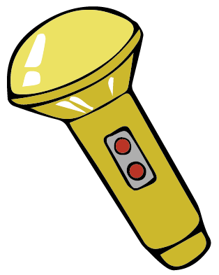
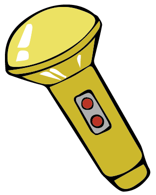

cover
n.s. badges
moonbeam torchlight
You were pleased by all the compliments from the property owner. You want to hear more compliments so you ask Doraemon to keep playing the flute. All of the sudden, the effect of the flute got reversed. The happy property owner quickly turned very angry at you again and he was going to tell your Mom about all the troubles you have caused. Now, you decide to......
Ask Doraemon to take out the N.S. Badges to use on the property owner and your Mom so they could not get near each other.


Ask Doraemon to transform you into a wolf with Moonbeam Torchlight so you can hide your true identity and pretend to be a wolf and your Mom could not find you.

 
